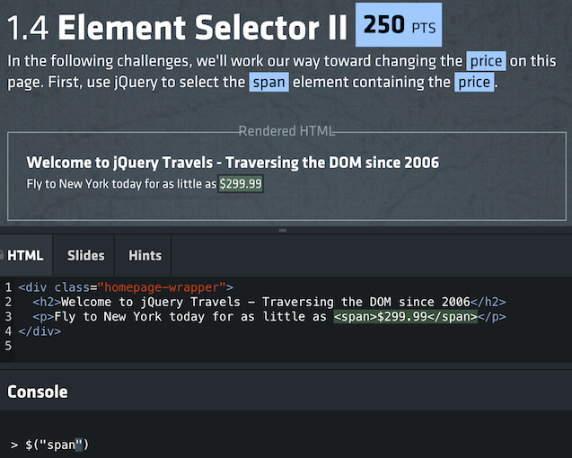

The DOM & jQuery
JS and HTML:s bastard childIntroducing the DOM
DOM DOM DOM!
In a nutshell: the DOM is the bridge between JS and HTML:
Another way of putting it: the HTML is the recipe and the DOM is the dish.
The DOM is the browser's internal representation of the HTML.
We've already seen the DOM in the Elements tab in the dev tools, and noted it looks an awful lot like our HTML.
But that's just because we haven't involved JavaScript yet. JavaScript can manipulate the DOM. The DOM is not constant.
We interact with the DOM from JS space through the global document variable. Go to a website and try this in the console:
document.body.setAttribute("style","background-color:red;")
Through document.body we got an HTML node, an object that represents an element. On that we can...
- call the
setAttributemethod like we just did - query attributes using the
getAttributemethod - change its content by assigning to
innerHTMLortextContent - iterate over child nodes using the
childrenproperty, allowing us to walk down the tree. - go back up the tree using the parent property.
We don't have to walk the tree from body, there are several methods for find a specific node or set of nodes via document:
.getElementById("someId").getElementsByClassName("someClass").getElementsByTagName("div")
And, there are two new methods which gets elements using CSS selectors:
.querySelector("#someId").querySelectorAll("article > p")
The only difference is that querySelector always return 0 or 1 elements, while querySelectorAll returns a list.
The querySelector methods are a good example of how the DOM has improved in later years. But go back in time, and it was rather horrible to work with.
This is a big reason for JavaScript's bad reputation, since JS is what we use to interact with the DOM. But, the fact is that interacting with the DOM would suck in any language. It wasn't JS' fault!
Question: All those words, but we still don't know what DOM stands for?
Answer: Sorry! The Document Object Model.
Catching DOM events
True interaction at last!
With CSS, the only interaction we could offer was some animations using :hover and :active.
But now is the time for some true user interaction!
The DOM lets us add event listeners to elements. These are functions that will be called whenever that particular event happen on that element.
Say we have this button in our document:
<button id="doomsdaybtn">Don't click me!</button>
And a reference to the corresponding node:
var btn = document.getElementById("doomsdaybtn");
We now create a function to be used as an event listener...
var listener = function(){
alert("BOOM!");
}
...and attach it using the addEventListener method on the node:
btn.addEventListener("click",listener);
We could also add the anonymous function directly:
btn.addEventListener("click",function(){
alert("BOOM!");
});
Now when the user clicks the button, the event handler function will run!
The handler will be called with an event object that describes what just happened. These differ depending on what event we were listening to.
What you just saw is the cornerstone of user interaction. We add event listeners to make things happen when the user does stuff!
There is a full list of events at MDN:
Although we can add listener to any elements, the most common use case is with form elements. We've mentioned buttons and inputs, but there are many more! MDN again has a full list:
https://developer.mozilla.org/en-US/docs/Web/Guide/HTML/Forms
Hey - when we for example attach an eventhandler like we just did:
btn.addEventListener("click",listener);
...isn't this functional programming, since we're passing a function around?
Why yes, it is indeed! :D
jQuery
What is the fuss about?
As life on Earth is based on carbon, so is the internet based on jQuery.

The library functionality is exposed through a global jQuery object created when we run the code. It also has $ alias if you want to be more succinct.
jQuery === $ // true
jQuery achieved its popularity through four good ideas:
We'll now talk through them one by one!
First off, using CSS selectors to match elements.
var firstParagraph = $("p:first-child");
The success of this idea was what caused querySelector(All) to be added to regular CSS.
Second, the façade - jQuery made better methods to interact with the DOM, and ensures that they work the same in all browsers:
firstParagraph.addClass("fadeanim");
The jQuery façade has less value now since
- browsers are much more standards compliant
- the DOM has been much improved
But it is still pretty nice!
Third, implicit looping - if a jQuery selection catches multiple elements, we can still act on all elements with a single method call:
var buttons = $("button");
buttons.setAttribute("disabled");
Some methods make no sense to use on many elements at once - they will operate on the first element in the selection.
Finally, chaining. All jQuery methods return the selection we were working on which means that instead of this:
var buttons = $("button");
buttons.setAttribute("disabled");
We can do this:
$("button").setAttribute("disabled");
Although the need for jQuery has diminished, it is still very popular.
And as its API is rather easy, using jQuery can be a better way to learn the DOM than the DOM itself!
So: definitely learn jQuery, but make sure to also understand what is actually going on.
Practice from time to time to do it without jQuery.
Ending by zooming out; this is what you'll be doing with jQuery most of the time:
$(someSelector).someMethod();
We
- select some elements, and
- do something with them
Exercise - jQuery
Drinking the coolaid
Armed with a basic understanding of jQuery, we're now going to get started on their bootcamp!
It is an interactive tutorial somewhat reminiscent of the games we've been playing with for other techniques.
Go to http://try.jquery.com and you'll see this:

Working through the screenshot top to bottom, a challenge consists of:
- an instruction up top telling you what to do
- rendered HTML code with currently selected elements highlighted
- the HTML code that has been rendered
- a console where you enter JS code and use jQuery
The tutorial does a good job of gradually introducing new concepts and ramping up difficulty.
And as progress is saved between sessions, there is nothing to lose by getting started right now! Try it out for a bit so you get the hang of it, and finish it later if you want!
Demo - a community effort
Dynamifying the game
Let's try something different - I'll now lead a mob programming exercise where we together rebuild the game from scratch using JavaScript.
We'll cover basic jQuery usage, but also how to think when we design our data model and structure our code!
Exercise - dynamic gamebook
static no more
Now, it is your turn to turn your static gamebook into a dynamic app!
This means we'll no longer reload when we turn pages, instead we'll work from one single .html page.
Here's the battleplan:
- aadd a code file
- bget jQuery
- cextract the first page adventure data
- dtemplatify the html page
- emake a page render method
- fmake a game state variable
- gextract the rest of the data
- hrender links
- imake links clickable
As you can see this is a long and perilous journey, so I encourage you to work in teams!
Create a new .js file called game.js. Link it in the main .html page, preferrably called index.html.
<script src="game.js"></script>
Remember, we won't be using any other .html pages!
To make sure you've added the code file correctly, add this line to the code file:
console.log("Hello from the code file!");
Then open the .html file in the browser and check for the message in the console tab in dev tools!
Now, getting jQuery! Now, the easiest thing would be to either
- add a script element linking to an online version
- download jQuery and add a script element linking to the local file
But we prefer powerful before easy, so let's instead use npm!
First, in your game folder, create a new file called package.json looking like this:
{
}
In other words, it just contains an empty object.
Now, navigate to this folder in the terminal and execute the following:
npm install --save jquery
Check package.json and you'll find it has been updated:
{
"dependencies": {
"jquery": "^3.1.1"
}
}
And, more importantly, a new folder called node_modules has been created, containing jQuery!
We should now add a script element to our .html page linking the relevant file:
<script src="node_modules/jquery/dist/jquery.js"></script>
Put this before the element that links your code file!
To make sure it works, add this line to your code file:
console.log("Here is jQuery, hopefully: ", $);
Reload in the browser, and make sure that the console does NOT output:
"Here is jQuery, hopefully: ", undefined
Now that we've started using modules from npm, there's something we need to fix - we don't want the node_modules folder to be included in our git repo.
This can be done with a .gitignore file!
In your game folder, create a file name .gitignore (weird name, I know). Make it contain this:
node_modules
This will prevent node_modules from being included when we do git add ..
If you're using IntelliJ, you might also want to make git ignore the .idea folder, which IntelliJ creates and fills with XML crap.
Simply add a new line to .gitignore:
node_modules
.idea
Time to extract the adventure data!
Create a new .js file called data.js. Start it off like this:
var adventure = {
title: "Some adventure title",
pages: {
}
};
Link the file in your .html page before your code file:
<script src="data.js"></script>
Now add this to your code file to make sure we can access adventure:
console.log("Here's the adventure", adventure);
Reload and make sure!
Now it is time to extract the data from the .html files and put it in the data object!
In data.js, add a start prop to the pages object prop, and fill it with the contents of the first page:
var adventure = {
title: "Some adventure title",
pages: {
start: {
title: "The adventure begins",
description: "You awake, eager to go on new adventures! What will the day bring?",
image: "https://smurfs.blob.core.windows.net/media/22677/harmony.png",
options: ["Go down to the river", "Head up to the fort"]
}
}
};
To make sure it works, add this line to code.js:
console.log("here's the first page data", adventure.pages);
Now things start to get challenging - time to templatify the html file!
First off, remove the hard-coded adventure data from index.html!
This means that index.html should now look like an empty template, something like this (just showing contents of body):
<div>
<h4></h4>
<img>
<p></p>
<ul></ul>
</div>
Let's also add some id's to make us able to reach the elements later! Something like this:
<div>
<h4 id="headline"></h4>
<img id="image">
<p id="flavourtext"></p>
<ul id="options"></ul>
</div>
Time to make a render function! It should receive a page object, and update the template with the given data.
To get you started, add this to code.js:
function renderPage(page){
$("#title").html(page.title);
}
renderPage(adventure.pages.start);
Reload in browser to make sure it works.
Now, flesh out renderPage to also add the image url, flavour text and options!
Of course, we don't want to always render the first page, but the page the user is currently on.
so let's create such a variable, and initialise it to the first page:
var currentPage = "start";
Note that we're storing the current page key, not the actual page object.
To start using this variable, let's update renderPage so that we no longer pass in a page. Instead it can get the page using adventure and currentPage:
function renderPage(){
var page = adventure.pages[currentPage];
}
This means we also have to change our test rendering from this...
renderPage(adventure.pages.start);
...to this:
renderPage(adventure.pages[currentPage]);
Reload and make sure it still works!
Time to extract the rest of the data from the other .html files. This means adding more page objects to adventure.pages!
var adventure = {
title: "Some adventure",
pages: {
start { ... },
deadEnd: { ... },
// ...more pages
}
}
For each option in a page, we need to start storing not just the text description but also which page it should link to!
This means that each option should be an object.
For example, my first page might now look like this:
start: {
title: "The adventure begins",
description: "You awake, eager to go on new adventures! What will the day bring?",
image: "https://smurfs.blob.core.windows.net/media/22677/harmony.png",
options: [
{text: "Go down to the river", target: "river"},
{text: "Head up to the fort", target: "fort"}
]
}
Do this for all pages, making sure that target links to actual page keys.
After you're done you can delete the other html files - we won't need them anymore!
Changing our links from strings to objects broke our renderPage method. Let's fix it!
We also need to make each option say which number the link had, to be able to tell which link was clicked later on!
Here's one solution:
function renderPage(page){
// ...rest redacted
$("#options").empty();
for(var l=0; l < page.options.length; l++){
var option = page.options[l];
var link = $("<li>");
link.text(option.text);
link.attr("data-number", l); // will be 0 or 1 or ...
$("#options").append(link);
}
}
Finally, let's make the links clickable!
When we click a link we need to update currentPage, and call renderPage again.
Add this to code.js:
var clickHandler = function(){
var link = $(this); // the clicked element;
var linkNumber = link.attr("data-number");
var page = adventure.pages[currentPage];
var linkObject = page.options[linkNumber];
currentPage = linkObject.target;
renderPage();
}
Finally, make this function run whenever we click a link by doing this bit of jQuery magic:
$("#options").on("click","li",clickHandler);
This means that we'll catch all click events for li:s inside #options, even for future elements that don't even exist yet!
Give yourself a huge pat on the back, and enjoy your fully functioning game! :D